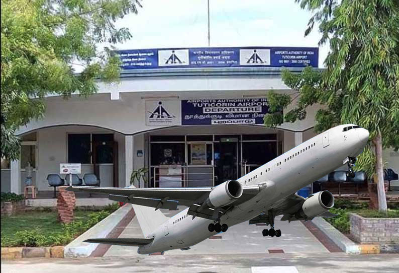

தூத்துக்குடி (Thoothukudi அல்லது Tuticorin) தென்னிந்திய மாநிலமான, தமிழ்நாட்டைச் சேர்ந்த மாநகரமும்,
தூத்துக்குடி மாவட்டத்தின் தலைநகரமும் ஆகும். இது ஒரு துறைமுக நகரமாகும். இது தமிழகத்தின் 10-ஆவது
மாநகராட்சியாக (தூத்துக்குடி மாநகராட்சி), ஆகஸ்ட் 5, 2008-இல் அப்போதைய தமிழக முதல்வர்
மு. கருணாநிதியினால் அதிகாரப்பூர்வமாக அறிவிக்கப்பட்டது.[3] இதன் மேற்கிலும், தெற்கிலும்
ஸ்ரீவைகுண்டம் வட்டமும், வடக்கில் ஒட்டப்பிடாரம் வட்டமும் உள்ளன. கிழக்கில் வங்காள விரிகுடா
கடல் அமைந்துள்ளது. தூத்துக்குடி வரலாற்று ரீதியில், பரதவர் இன மக்கள் மீன் பிடித்தும், அதிகளவில்
முத்துகுளித்தும் வந்தனர். இன்றளவும் இம்மக்கள், சங்கு குளிக்கும் தொழில் செய்கின்றனர்.இதை நாம்,
அகநானூறு 350-வது அதிகாரத்தில் காணலாம். இம்மாவட்டத்திற்கு 'முத்து நகர்' என்ற பெயரும் உண்டு.
தூத்துக்குடியில், அனல் மின் நிலையமும், ஸ்பிக் உரத்தொழிற்சாலையும் அமைந்துள்ளன